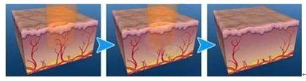

血管瘤是一种良性肿瘤，是由于血管组织的错构，瘤样增生而形成。 是小儿时期常见的良性肿瘤，约3/4小儿血管瘤在出生时就已存在， 其余的也在1岁内出现，女婴较男婴多见。 血管瘤好发于颜面及四肢皮肤，影响美观， 还可因外伤、摩擦、搔抓出血，而引起细菌感染。

草莓状血管瘤者、毛细血管瘤者、海绵状血管瘤者
脉冲激光发射的绿色激光能极为顺利地穿透病损上的表皮进入到病损部位，
病损区的血管内部的血红蛋白在强大的激光下完全凝固，
这些凝固的血红蛋白将异常的血管封闭，
结果鲜红斑痣内的病变血管消失，从而得到祛血管瘤效果。

治疗时间：60-90分钟
恢复时间：2个月左右
治疗效果：自然无痕，肌肤恢复如初


安全可靠：顶级的医疗设备，专业医师操作，安全可靠又有技术保障
舒适嫩肤：低温度高能量，对肌肤没有任何损伤，舒适安全，效果甚佳
效果显著：肌肤恢复水嫩光滑，洁白无暇
尊贵享受：全程优质服务，让你亲身体验做女王